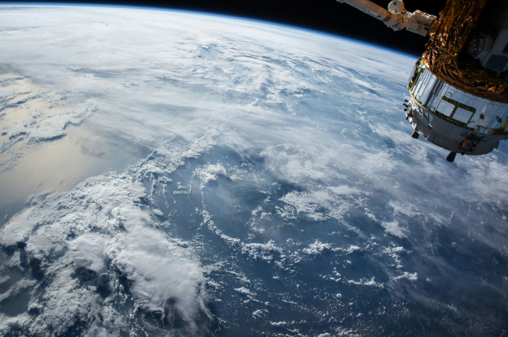
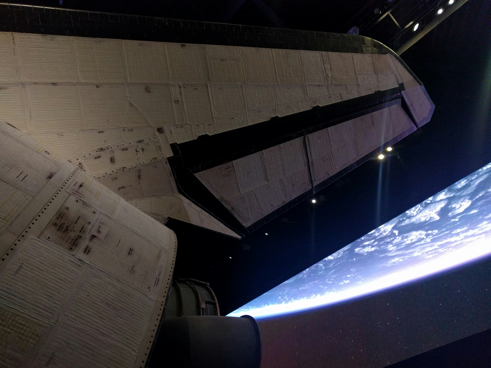

News about Outer Space

What is Comet 3I/ATLAS?
Comet 3I/ATLAS is the third known object from outside our solar system to be discovered passing through our celestial neighborhood. Astronomers have categorized this object as interstellar because of the hyperbolic shape of its orbital path. (It does not follow a closed orbital path about the Sun.) When the orbit of 3I/ATLAS is traced into the past, the comet clearly originates from outside our solar system. Comet 3I/ATLAS poses no threat to Earth and will remain far away. The closest it will approach our planet is about 1.8 astronomical units (about 170 million miles, or 270 million kilometers). 3I/ATLAS will reach its closest point to the Sun around Oct. 30, 2025, at a distance of about 1.4 au (130 million miles, or 210 million kilometers) — just inside the orbit of Mars.
Read More »
NASA’s Webb Space Telescope Observes Interstellar Comet
NASA’s James Webb Space Telescope observed interstellar comet 3I/ATLAS Aug. 6, with its Near-Infrared Spectrograph instrument. The research team has been analyzing insights from Webb’s data, and a preprint is available online. Webb is one of NASA’s space telescopes observing this comet, together providing more information about its size, physical properties, and chemical makeup. For example, NASA’s Hubble Space Telescope and the recently launched SPHEREx mission have also observed the comet. While the comet poses no threat to Earth, NASA’s space telescopes help support the agency’s ongoing mission to find, track, and better understand solar system objects.
Read More »Beyond Gravity plans US push after fivefold boost in European solar mechanism output
TAMPA, Fla. — Beyond Gravity is weighing expanding solar array drive mechanism production in Florida to support Golden Dome and other U.S. space projects, after doubling manufacturing space in Europe for hardware that keeps satellites pointed toward the sun. The Zurich-headquartered space systems supplier said Oct. 15 that expanding to 225 square meters of cleanroom space in Switzerland has delivered a fivefold increase in output, enabling production of 200 mechanisms per year amid growing demand for sovereign constellations in Europe. “This year alone, we have already delivered more units than in the past three years combined,” said Oliver Grassmann, Beyond Gravity’s executive vice president of satellites. Grassmann said European demand is being driven by IRIS², Europe’s proposed sovereign multi-orbit broadband network, and other planned constellations aimed at strengthening regional independence.
Read More »